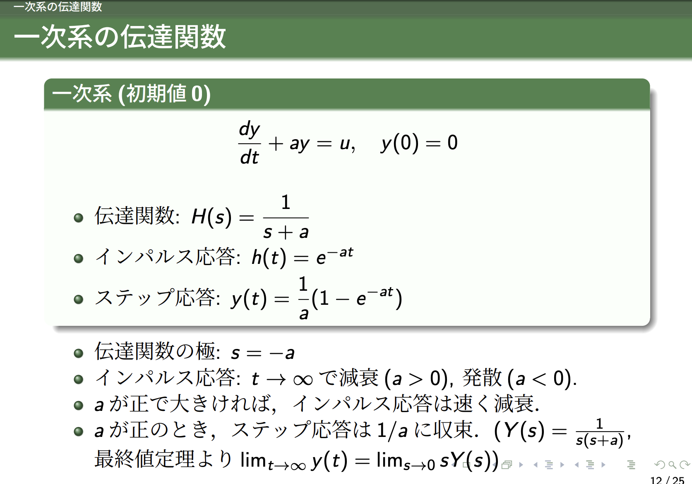
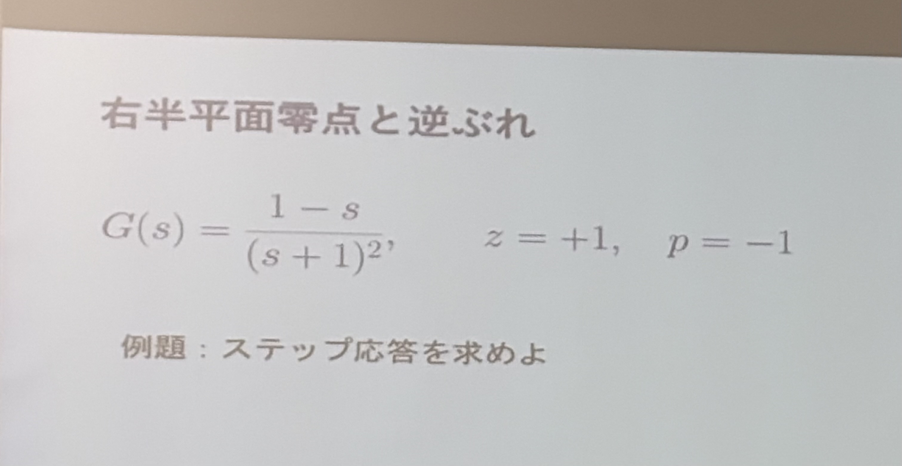
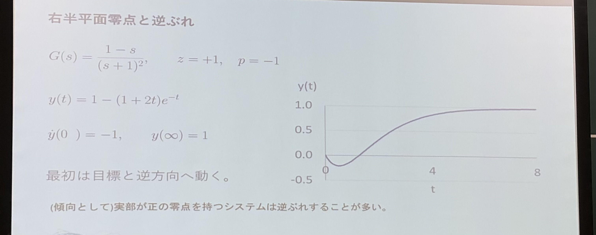
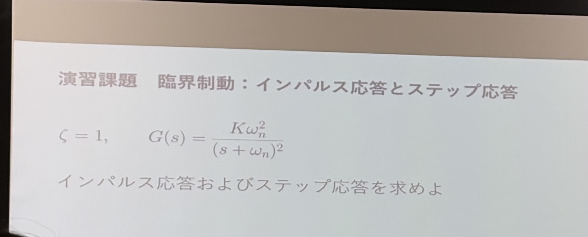

概要
伝達関数の極・零点と応答の特徴について確認する会話です。逆ぶれを伴うステップ応答と、重複した極を持つ二次系のインパルス応答・ステップ応答を、部分分数分解と逆ラプラス変換で求めています。
原典：共有会話1
想定読了時間：約12分
共有会話1：線形制御理論 第5回
質問 1
結局この講義スライドで言いたいことは何？
ChatGPTの回答 1
一言でいうと、「機械や回路に入力を与えたとき、どう動くかを、伝達関数から予測できるようになろう」という講義です。
伝えたいことは、大きく3つあります。
システムの性質を「伝達関数」にまとめる。
\[\text{出力 }Y(s)=\underbrace{H(s)}_{\text{システムの性質}}\times\text{入力 }U(s)\]
微分方程式をラプラス変換すると、初期値が0ならと、掛け算で扱える。
代表的な入力への反応が分かれば、ほかの入力への反応も分かる。
一瞬だけ刺激を与えた反応が「インパルス応答」、入力を0から1に切り替えて保った反応が「ステップ応答」。これらと伝達関数は、同じシステムの性質を別の形で表している。伝達関数の「極」を見れば、振動するか・どれくらい速く落ち着くかが分かる。
極とは、伝達関数の分母を0にする値。後半は、これを一次系・二次系で具体的に確認している。
特に後半のポイントは、「抵抗やダンパーを強くすれば、いつでも速く落ち着くわけではない」こと。弱すぎると振動し、強すぎるとゆっくりしか動かなくなる。電気回路も、ばねにつながった物体も、同じ数式でこの性質を説明できます。
質問 2
12枚目以降、後半のスライドでは、結局何が言いたい？短く簡潔に解説して
ChatGPTの回答 2
「伝達関数の分母の根＝極を見れば、システムがどう動くか分かる」という話。
- 極の実部 → 振動などが減衰する速さ。負なら減衰し、より負なら速い。
- 極の虚部 → 振動の速さ。虚部が0なら振動しない。
これを回路やばねで確認している。特に、抵抗やダンパーは、弱いと振動するが、強すぎても落ち着くのが遅くなる、というのが後半のポイント。
質問 3
何が言いたい？

ChatGPTの回答 3
「係数 \(a\) を見れば、このシステムが落ち着くか、どれくらい速く落ち着くか分かる」という話。
- \(a>0\)：一瞬の刺激の影響は \(e^{-at}\) で消える。\(a\) が大きいほど速く消える。
- \(a<0\)：刺激の影響が時間とともに大きくなり、発散する。
- \(a>0\) で入力をずっと1にする：出力は最終的に \(1/a\) に落ち着く。
これを伝達関数の言葉でいうと、「極 \(s=-a\) が負なら落ち着き、より負なら速く落ち着く」となる。
質問 4
このような問題はどのように取り組めば良い？


ChatGPTの回答 4
「入力をラプラス変換 → 伝達関数を掛ける → 逆ラプラス変換」の順で取り組めばよい。初期値は0とする。
① ステップ入力なので \(U(s)=1/s\) とする。
\[Y(s)=G(s)U(s) =\frac{1-s}{s(s+1)^2}.\]② 逆変換できるように部分分数分解する。
分母に \(s\) と重複した因子 \((s+1)^2\) があるので、
\[\frac{1-s}{s(s+1)^2} =\frac{A}{s}+\frac{B}{s+1}+\frac{C}{(s+1)^2}\]と置く。両辺に分母を掛けて係数を比較すると、
\[1-s=A(s+1)^2+Bs(s+1)+Cs\]より \(A=1,\ B=-1,\ C=-2\)。
③ 各項を逆ラプラス変換する。
\[Y(s)=\frac1s-\frac1{s+1}-\frac2{(s+1)^2}\]だから、
\[\boxed{y(t)=1-e^{-t}-2te^{-t} =1-(1+2t)e^{-t}}.\]④ 結果の意味を確認する。
\[y(0)=0,\qquad y'(0)=-1,\qquad \lim_{t\to\infty}y(t)=1.\]つまり、最終的には1になるのに、最初は負の方向へ動く。これが「逆ぶれ」。
この問題では、まず上の手順で応答を計算し、その後で「最初の動く方向」と「最終的に落ち着く値」を比べればよい。
質問 5
zやpはどういう意味？問題を解くのには必要ないの？
ChatGPTの回答 5
\(z\) は零点（zero）：伝達関数の分子を0にする値。
\[1-s=0\quad\Rightarrow\quad z=1\]\(p\) は極（pole）：伝達関数の分母を0にする値。
\[(s+1)^2=0\quad\Rightarrow\quad p=-1\]今回は重解なので「2重の極」。
ステップ応答の式を計算するだけなら、\(z,p\) を別に求める必要はない。 前の回答の手順で解ける。
ただし、応答の特徴を読み取るのに役立つ。
- 極 \(p=-1\)：\(e^{-t}\) や \(te^{-t}\) が現れ、時間とともに消える。
- 零点 \(z=1\)：この例では、最初に逆方向へ動く「逆ぶれ」に関係する。
つまり、計算には伝達関数そのものを使い、動きの性質を理解するために零点と極を見る。
質問 6
部分分数分解までやって欲しい

ChatGPTの回答 6
初期値を0として、インパルス入力とステップ入力をそれぞれ代入する。
① インパルス応答
入力は \(U(s)=1\) なので、
\[Y(s)=G(s)=\frac{K\omega_n^2}{(s+\omega_n)^2}.\]これは既に逆変換できる形なので、部分分数分解は不要。
② ステップ応答
入力は \(U(s)=1/s\) なので、
\[Y(s)=\frac{K\omega_n^2}{s(s+\omega_n)^2}.\]重複した因子には、1乗と2乗の両方を用意して、
\[\frac{K\omega_n^2}{s(s+\omega_n)^2} =\frac{A}{s}+\frac{B}{s+\omega_n} +\frac{C}{(s+\omega_n)^2}\]と置く。
両辺に \(s(s+\omega_n)^2\) を掛けると、
\[K\omega_n^2 =A(s+\omega_n)^2+Bs(s+\omega_n)+Cs.\]ここで、
- \(s=0\) を代入：\(K\omega_n^2=A\omega_n^2\) より \(A=K\)。
- \(s=-\omega_n\) を代入：\(K\omega_n^2=-C\omega_n\) より \(C=-K\omega_n\)。
- \(s^2\) の係数を比較：\(A+B=0\) より \(B=-K\)。
したがって、
\[\boxed{ Y(s)=\frac{K}{s} -\frac{K}{s+\omega_n} -\frac{K\omega_n}{(s+\omega_n)^2} }\]質問 7
とくとどうなる？
ChatGPTの回答 7
逆ラプラス変換の公式
\[\frac1s\ \longrightarrow\ 1,\qquad \frac1{s+a}\ \longrightarrow\ e^{-at},\qquad \frac1{(s+a)^2}\ \longrightarrow\ te^{-at}\]を使うと、次のようになる。
① インパルス応答
\[Y(s)=\frac{K\omega_n^2}{(s+\omega_n)^2} \quad\Rightarrow\quad \boxed{h(t)=K\omega_n^2t\,e^{-\omega_n t}}\]② ステップ応答
\[Y(s)=\frac Ks-\frac K{s+\omega_n} -\frac{K\omega_n}{(s+\omega_n)^2}\]より、
\[y(t)=K-Ke^{-\omega_n t}-K\omega_n t\,e^{-\omega_n t}.\]したがって、
\[\boxed{y(t)=K\left[1-(1+\omega_n t)e^{-\omega_n t}\right]}\]\(\omega_n>0\) なら、ステップ応答は振動せず、0から最終値 \(K\) に近づく。